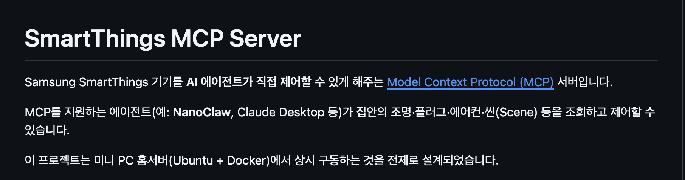

INTRODUCTION
나를 소개합니다
코딩을 첫걸음부터 배우고 있는 박민찬입니다.
관심 분야: Web FE/BE · AI Agents · AX
기술 · 학습 목표: C · HTML · CSS · JS · Python · AI Basics
프로젝트 소개
SmartThings MCP Server
AI 에이전트의 안정적인 Home IoT 제어를 위한 Model Context Protocol(MCP) Server를 LLM을 통해 제작하였습니다. SmartThings API 키를 활용해 인증 및 제어가 가능합니다.
회고 및 학습 목표
이 프로젝트는 LLM을 활용해서 제작되어 나 자신만의 코딩 능력으로 보긴 어려웠습니다. 이런 부분을 개선하기 위해 프로그래밍 기초를 더 기르겠습니다.
